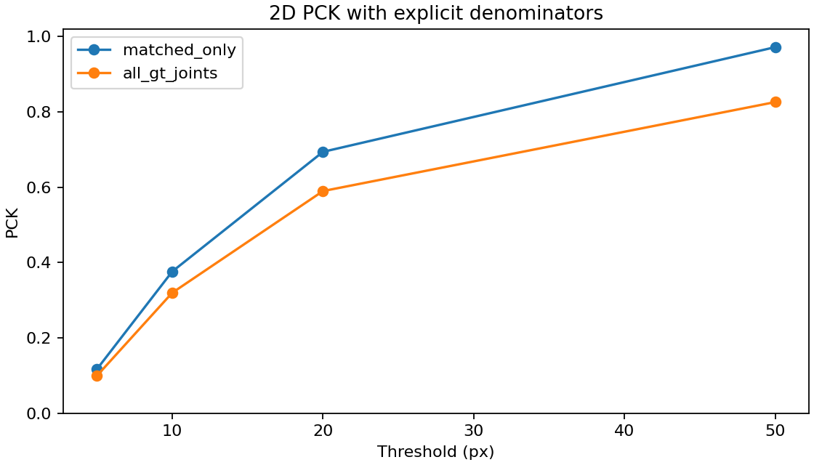

Matching uses same-side bounding-box IoU, not the smallest ground-truth joint error.
Joint errors use matched hands. All-GT PCK counts missing hands as failures.
Ground-truth manifest SHA-256: d6352d913e18ded4c61acaab838fc64a5825fc0ba2cfc13fefe6cd79ae90f7b2
| Metric | Value |
|---|---|
| frames | 100 |
| gt_hands | 100 |
| matched_hands | 85 |
| missed_hands | 15 |
| unmatched_predictions | 9 |
| hand_recall | 0.85 |
| hand_precision | None |
| 2d_px | 17.04155946961032 |
| camera_mpjpe_mm | None |
| root_mpjpe_mm | None |
| pa_mpjpe_mm | None |
